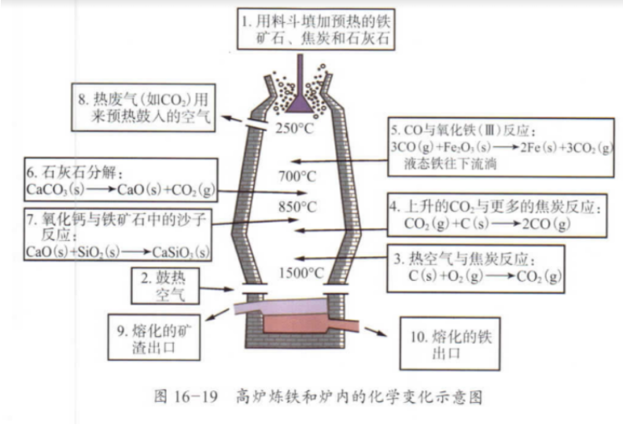

氢气
上/31 |
高温高压 |
水煤气 |
将水蒸气通过炽热（约1000°C）的焦炭制水煤气
C(s,炽热)+HX2O(g) CO(g)+HX2(g)
约 500°C，以 Fe2O3 催化水煤气继续和水蒸气作用
CO(g)+HX2O(g) COX2(g)+HX2(g)
COX2 (溶) 和 HX2O (微溶) 在高压溶解度的不同除去 COX2 |
氢气
上/31 |
高温高压 |
甲烷 |
约 800~900°C 及 Ni 的催化，甲烷和水蒸气反应：
CHX4(g)+HX2O(g) CO(g)+3HX2(g)
依照水煤气制取氧气方法将 CO 转化 COX2，再加压制氢气 |
氢气
（电解法）
上/32 |
|
饱和食盐水 |
氯碱工业 电解饱和食盐水：
2NaCl(aq)+2HX2O(l) 2NaOH(aq)+HX2(g)+ClX2(g)
阴极：NaOH,HX2 阳极：ClX2 |
氧化镁
上/243 |
高温 (550°C) |
菱镁矿 (MgCO3) |
高温 (550°C) 煅烧，再经冷却、筛分、粉碎、制取氧化镁
MgCOX3(s) MgO(s)+COX2(g) |
氧化钙
上/245 |
高温 |
石灰石 (CaCO3) |
煅烧石灰石
CaCOX3(s) CaO(s)+COX2(g) |
铁/铜
上/275 |
高温 |
一氧化碳 |
FeX2OX3(s)+3CO(g) 2Fe(s)+3COX2(g) |
甲醇
上/275 |
高温 高压 催化剂 |
一氧化碳 |
CO(g)+2HX2(g) CHX3OH(l) |
二氧化碳
上/277 |
高温 |
石灰石 |
CaCOX3(s) CaO(s)+COX2(g) |
碳酸钠
（氨碱法）
上/280 |
燃烧 |
饱和氯化钠溶液 + 氨气 + 二氧化碳 |
用饱和氯化钠溶液吸收氨气和二氧化碳 得到溶解度较小的碳酸氢钠
NaCl(aq)+NHX3(g)+COX2(g)+HX2O(l) NaHCOX3(s)+NHX4Cl(aq)
再将碳酸氢钠煅烧得到碳酸钠
2NaHCOX3(s) NaX2COX3(s)+COX2(g)+HX2O(l) |
电石（乙炔）
上/281 |
高温 |
焦炭 + 生石灰 |
CaO(s)+3C(s) CaCX2(s)+CO(g) |
二氧化硫
上/282 |
|
炽热的木炭 + 硫黄蒸气 |
C(s,炽热)+2S(g) CSX2(l) |
金刚砂（碳化硅）
上/282 |
高温 (2000°C) |
沙子 + 焦炭 |
SiOX2(s)+3C(s) SiC(s)+2CO(g) |
硅
上/285 |
高温 |
高温，焦炭将石英砂还原得到含杂质的粗硅
再提炼出纯硅 |
SiOX2(s)+2C(s) Si(s)+2CO(g) |
玻璃（？）
上/290 |
高温 |
|
SiOX2(s)+NaX2COX3(s) NaX2SiOX3(s)+COX2(g)
SiOX2(s)+CaCOX3(s) CaSiOX3(s)+COX2(g) |
硝酸
（氨的催化氧化法）
上/302/308 |
|
|
氨气在铂—铑合金催化剂作用下与氧气反应：
4NHX3(g)+5OX2(g) 4NO(g)+6HX2O(g)
一氧化氮被氧气氧化生成而氧化氮
2NO(g)+OX2(g) 2NOX2(g)
用水吸收二氧化氮生成硝酸
2NOX2(g)+HX2O(l) HNOX3(aq)+HNOX2(aq)
3HNOX2(aq) 2NO(g)+HNOX3(aq)+HX2O(l)
总反应式：
3NOX2(g)+HX2O(l) 2HNOX3(aq)+NO(g) |
磷酸
上/326 |
|
磷酸钙 + 硫酸 |
CaX3(POX4)X2(s)+3HX2SOX4(aq) 3CaSOX4(s)+2HX3POX4(aq) |
氧气
（分馏液态空气）
上/338 |
电解 |
电解水 |
2HX2O(l) 2HX2(g)+OX2(g) |
| 电解 |
电解熔融氢氧化钠 |
2NaOH(l) 2Na(s)+HX2(g)+OX2(g)
阴极：Na,HX2 阳极：OX2 |
过氧化氢
上/347 |
电解 |
电解硫酸 -> 过二硫酸
水解过二硫酸 |
HX2SX2OX8(l)+2HX2O(l) 2HX2SOX4(aq)+HX2OX2(aq) |
硫
上/352 |
高温 |
.. |
3FeSX2(s)+12C(s)+8OX2(g) FeX3OX4(s)+12CO(g)+6S(l) |
硫酸
（接触法）
上/366 |
|
|
造气
原料（含硫矿石）沸腾炉中充分氧化生成 SOX2
S(s)+OX2(g) SOX2(g)
4FeSX2(s)+11OX2(g) 2FeOX3(s)+8SOX2(g)
二氧化碳接触氧气被氧化成三氧化硫
在 400~500°C 下在五氧化二钒 V2O5 的接触式氧化
2SOX2(g)+OX2(g)2SOX3(g)
三氧化硫的吸收和硫酸的生成
SOX3(g)+HX2SOX4(l) HX2SOX4⋅SOX3(l) (发烟硫酸,oleum)
HX2SOX4⋅SOX3(l)+HX2O(l) 2HX2SOX4(aq)
仔细见上/367 |
氯气
上/391 |
|
饱和食盐水 |
氯碱工业 电解饱和食盐水：(细见上/3922)
2NaCl(aq)+2HX2O(l) 2NaOH(aq)+HX2(g)+ClX2(g)
阴极：NaOH,HX2 阳极：ClX2 |
盐酸
上/396 |
点燃 |
|
氯化氢的合成
氯化氢的冷却
氯化氢的吸收
图见上/396
干燥的氯气和氢气混合并点燃：
HX2(g)+ClX2(g) 2HCl(g) |
铁
上/423 |
|
|
 |
铜
上/433 |
高温 |
|
CuFeSX2(s)+OX2(g) CuX2S(s)+2FeS(s)+SOX2(g)
2CuX2S(s)+3OX2(g) 2CuX2O(s)+2SOX2(g)
2CuX2O(s)+CuX2S(s) 6Cu(s)+SOX2(g) |